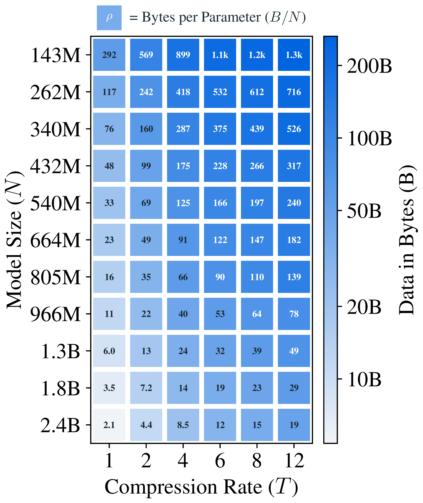
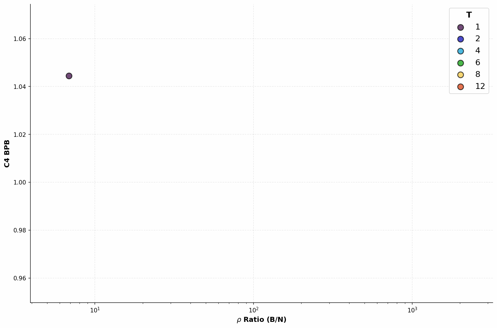
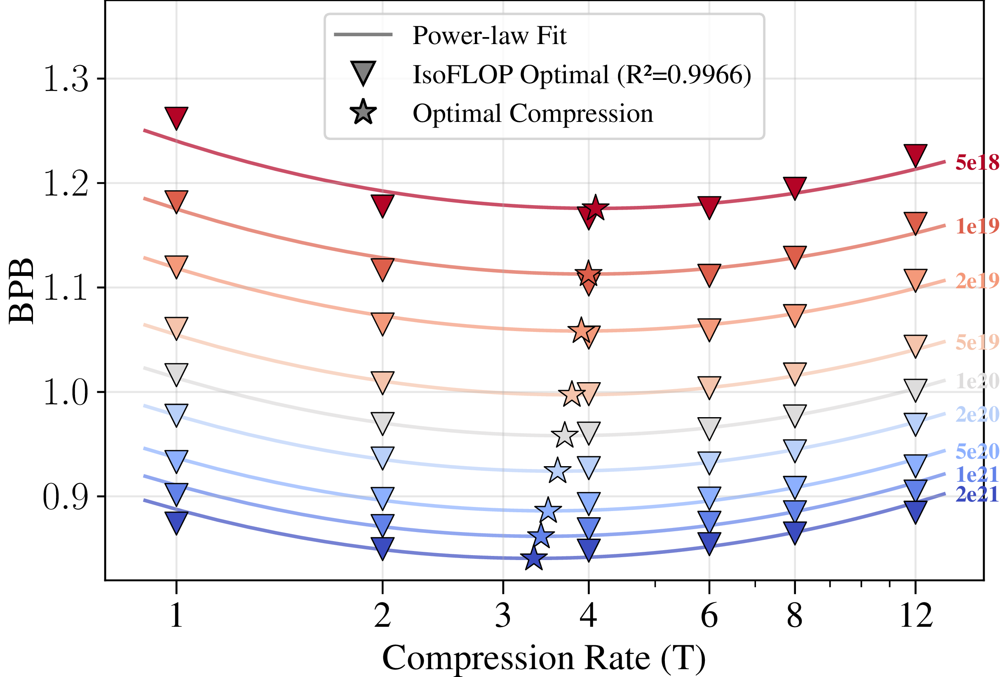
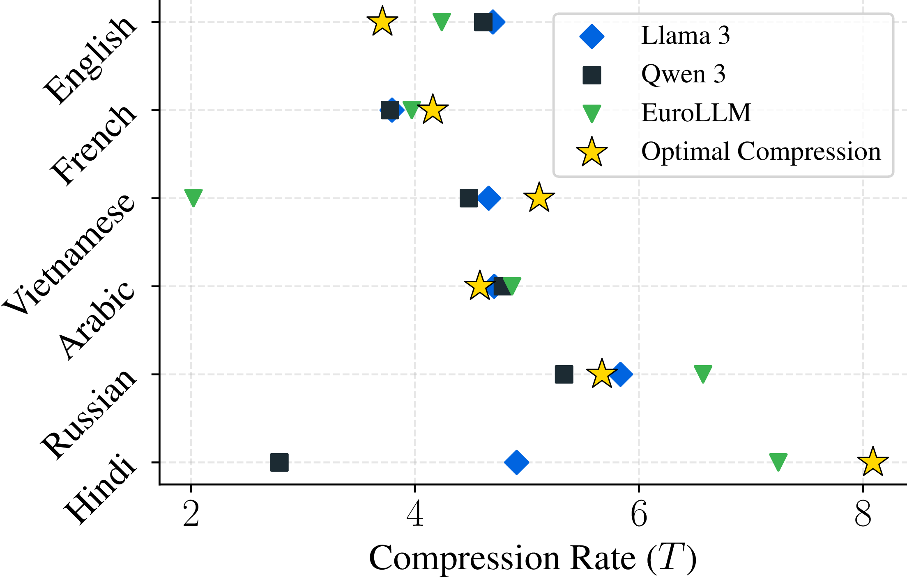

Scaling Laws and Data Compression
We train language models for fixed compute budgets, sweeping over compression rate, data amount, and parameter count. For each configuration, we compute the number of bytes per parameter and plot its loss.


Optimal Data to Model Size
The optimal ratio between bytes of data and model parameters is close to constant across variable compute budgets and compression rates. Therefore, when generalizing a scaling recipe to a model with a different tokenizer, we advise matching the ratio of training bytes (not tokens) to model parameters.

Optimal Compression Rate
The model's loss is minimized at optimal compression rate. Diverging from its value in either direction increases loss. We observe a small decrease of optimal compression rate for higher training budgets.


Beyond English
The optimal bytes-to-parameter ratio and compression rate vary across different languages. Both are correlated with the average information value of bytes in a given language (Parity).


